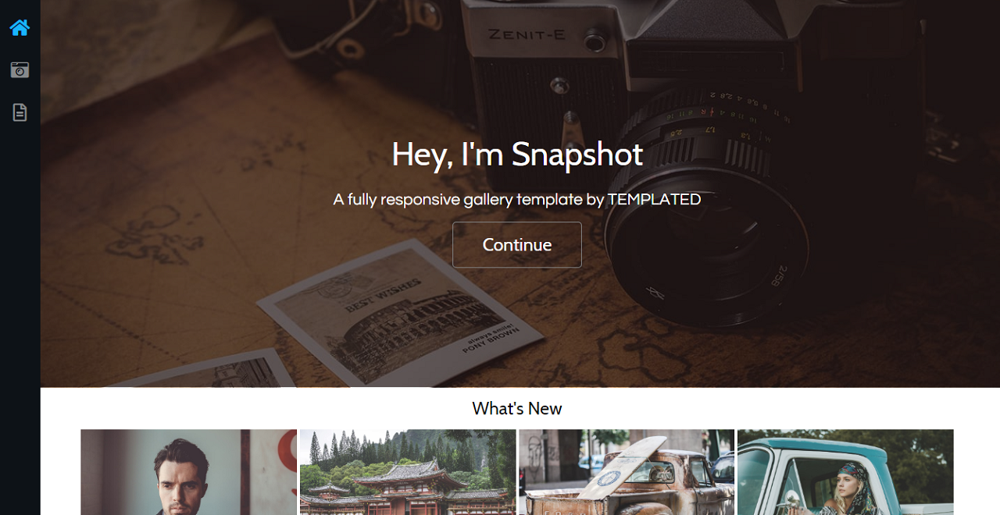
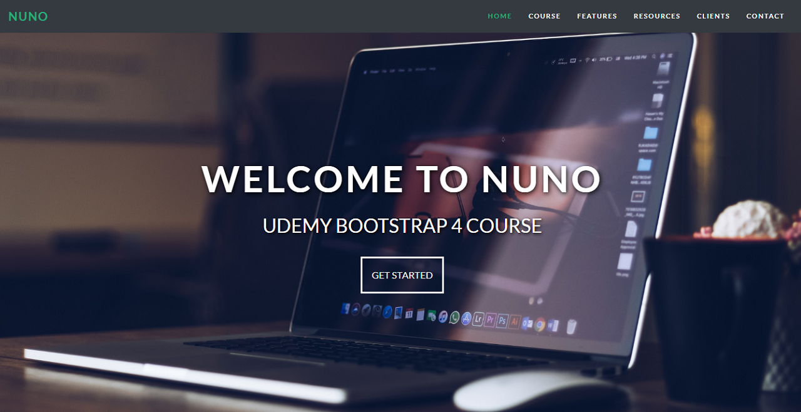

Helló!
A nevem Csaba, és pályakezdő webfejlesztő vagyok. Ugyan még nem rendelkezem releváns szakmai tapasztalattal, mindazonáltal szorgalmas és elhivatott vagyok. Hatalmas szenvedéllyel állok a szakma iránt, az ebben való tevékenykedés számomra örömet okoz. Szeretném a már meglévő tudásom elmélyíteni, és szeretnék szakmailag is fejlődni.
CV letöltéseTanulmányok
Webfejlesztő
CodeBerry Programozóiskola
Az életemet a webfejlesztés és a tanulás köré rendeztem. Amint véget ér a munka minden időmet arra fordítom, hogy minél többet tudjak haladni és fejlődni ezen a területen. Az iskolában tanultak mellé a CodeBerry által részt vettem egy online webfejlesztő képzésen, ahol részletesen tanulhattam a webfejlesztésről. Alaposabban megismerkedtem a HTML, CSS és JavaScript nyelvekkel, valamint betekintést nyertem a Node.js világába is.
Számítástechnikai mérnök
Műszaki Szakfőiskola Szabadka
Itt szereztem BSc diplomám és kezdtem el érdeklődni igazán a programozás iránt. Elsősorban a PHP és MySQL volt amivel jobban megismerkedtem és ezek használatával készítettem el a szakdolgozatomat is. Később pedig ezekből korrepetáltam a hallgatókat a zárthelyi dolgozatokra.
Folyamatirányítási elektronikus
"Ivan Saric" Műszaki Középiskola Szabadka
Középiskolai éveim alatt még az elektronika felé kacsingattam, azonban itt találkoztam először programozással is. Izgalmas új világ volt, amely rögtön magával ragadott. Ezután világos volt, hogy milyen irányban szeretnék tovább haladni.
Kódolás
-
HTML5
90%
-
CSS3
90%
-

JavaScript
50%
-
PHP
85%
Néhány munkám
-
Reszponzív esküvői weboldal HTMl és CSS használatával.
Megtekintés -

Reszponzív template oldal HTML, CSS és jQuery használatával.
Megtekintés -

Reszponzív template oldal Bootstrap alkalmazásával.
Megtekintés
Kapcsolat
-
Cím
Törekvés út 55, Kanizsa, Szerbia
-
Telefon
(+381)64 328 6082